Irudd Galaxy · Known player-facing changes (Lantern Reach playtests)
What this is. This page lists behaviour to carry into the rebuild. It comes from three playtests of the previous build by Andreas, the game's designer, plus two scripted test runs. It is not a technical plan. It describes what the player should see and feel, and the agent doing the rebuild decides how to build it.
How to read an item. Every item stands on its own. It says where it happens and how to get there, what the player sees now (with the exact on-screen text where we have it), what Andreas said in his own words, and what good looks like. Quotes are copied as he typed them, typos included. Screenshots come from the previous build. Most are from the newest build he tested. Where a picture comes from an earlier build, its caption says so.
Priority reflects how strongly Andreas felt about it: ▲ High■ Medium● Low. Possibly still open means the problem was seen in an earlier build and the newest build was not checked for it. Treat it as a requirement anyway.
Screen size. The design resolution is 1280×720. Every "nothing overlaps" statement on this page means at that size.
Glossary
These are names from the current content of the first slice, the Lantern Reach. The rebuild may keep or change them, but the items below use them.
The player and ships
The Wren
The player's ship: small, round-nosed and orange. It starts with a 20-unit hold and 40 credits.
NPC ships
Other pilots flying their own routes, shown with a name label under the ship, for example Little Mercy and Quiet Lamp.
Tender
A small craft with no crew that Tamsin builds. It waits at a station to sell for a good price. It is offered for 2400 credits.
Stations (places you dock)
Lantern Wharf
The starting station, run by the Wharf Cooperative. Its rooms are Office, Market and "Wharf", the fitting room.
Kettle Dock
A nearby station with a growing greenhouse. Its rooms are Office, Market and Berths.
Cinder Hook
An ore depot in the Cinder Drift region, reached by riding a lane.
Brassmouth Exchange
The trade station of the Tollway Compact.
Glass Drift Observatory
A station of the Lamplighter Society. Its rooms are Office, Market and Archive.
People
Ilse Marrow
Dockmaster at Lantern Wharf. She keeps the office and the market there and gives the first goal.
Orrin Vale
The hullwright (ship fitter) at Lantern Wharf. He fits parts onto the Wren in the "cradle", the fitting room.
Odo Fenn
Keeper at Kettle Dock, who grows the greenhouse there. He wants ice and refined plate.
Tamsin Oddway
At Kettle Dock, in the Berths. She builds tenders.
Rook Adeyemi
Keeps the ore depot at Cinder Hook.
Pip Calloway and Saffron Vey
At Brassmouth Exchange. Pip runs the market and Saffron keeps the Tollway Compact's books in the office.
Hesper Lune and Nell
At Glass Drift Observatory. Hesper is in the office and Nell in the archive. Hesper can send parts to the Wren.
World
Rimewater
The ice field of pale rocks just east of Lantern Wharf. It is the first place the player mines.
Lane / lantern current
A glowing route between regions. You enter it at a ring and it carries you to the next region. On screen it is drawn as a teal line. The first one, the lantern current, starts east of the Wharf and leads to Lantern Shallows and on to Cinder Drift.
Beacon
A marker along a lane. Two beacons have their own radio channel.
Goods and parts
Goods
Ice, iron ore and glassite are mined from rocks. Refined plate and rations are bought and sold.
Parts
Fitted in the cradle, for example the mining lens (mine faster), the hold extender, hold pods (+10 hold, heavier) and the seam lamp (a utility part).
Control modules
Parts that unlock a way of controlling the ship: the nav chip (click where to fly), the rock cradle (click a rock to mine it), the lane chart (click a place on the map to travel), the order slate (line up several orders), the loop log (repeat a route) and the docking clamp.
Screens and systems
Room / module
Each station is drawn as a set of modules (buildings), each with a room inside: Office, Market, Wharf/cradle, Berths or Archive. Each room has a keeper.
Cradle / fitting room
The room where parts are dragged onto the Wren's sockets: drill mount, utility, control rack, hold and engine.
Power and mass
The two fitting budgets. The Wren has 4 power and carries 3 mass freely. Going over the mass allowance makes the ship slower and its turns wider.
Locker
Storage for parts you own but have not fitted. There is one locker per hull.
Ready / Make / Friends
Tabs in the fitting room. Ready is parts on the rack to buy, Make is parts made to order, and Friends is parts ordered from contacts at other stations.
Goal banner
The wide cream bar at the top centre that shows the current goal and who gave it.
Station plate
The cream box at the top left that shows the docked station's name, a teal bar and its faction.
Log
The ship log, a list of past messages, opened by a button at the bottom left.
Radio
Each station and two lane beacons broadcast a channel with a range. In flight, a panel at the bottom right shows the channel, its signal strength, a text ticker and the buttons Prev, Off and Next (the R key).
Chronicle
Entries that record a change in the world, such as a greenhouse ring lit up.
Station key
Part of the agreed station design (see "Already decided"): a row of icons along the bottom of the docked view, one per module.
Already decided (do not contradict)
The docked station (agreed design).
Docking zooms in so the station fills the view.
Each module is clickable. Hovering a module lifts it slightly, gives it an outline and shows its sign: the keeper's name and one line about what is offered there.
Clicking a module glides the view to its room. The room panel opens beside the module and covers at most about 45% of the screen, so the station stays visible.
Right-click, Esc or a Back button returns to the whole station.
A station key runs along the bottom: one icon per module, so every room is one click away. An icon can carry a news ribbon (New, Changed or Closed) with a one-line headline on hover.
Talk. Characters speak in short bubbles over the speaker, and a click advances to the next line. The ship log is one small icon at the bottom left. No text panel grows with history.
Input. Mouse first: every room and action can be reached by clicking. The movement keys (W, A, S, D) always fly the ship off the dock, with no separate undock step.
Agency. Nothing changes the player's cargo, credits or fitted parts without a deliberate choice and a readable receipt.
Readability.
Text is pure black or pure white, never grey.
State colours come from a colourblind-safe set and are always paired with a shape, an arrow or a word.
Disabled buttons look different (for example dashed), never greyed out.
Collision. Ships, rocks and stations are solid. They bump and push, and nothing ever takes damage.
Turn rate. The ship turns at 180 degrees per second.
Basic controls stay. Once a basic control is unlocked (for example click to fly, click to mine, map travel, order queues or loops), it is never taken away.
Music. Generated music and its spending cap belong to the player, not to a save. The core game ships one starter track per radio channel.
Calm. The game is solo and forgiving. Nothing punishes the player for bumping into things.
Dock and station
The dock must look like the agreed design: one station, large and up close ▲ High
Where and how
Start a new game. You begin docked at Lantern Wharf.
Look at the whole screen.
What the player sees now
The station is a small drawing in the middle of a big starfield, with three small labels on it: Office, Market and Wharf.
The rest of the dock is spread around the screen edges:
a station plate at the top left (Lantern Wharf, a teal bar, Wharf Cooperative)
three room tabs along the bottom: Office · Ilse, Market · Ilse, Wharf · Orrin
a goal banner at the top
a credits and hold box at the top right
a dialogue box on the left
The station key, the zoom-in and the news ribbons from the agreed design are missing.
Andreas said
Actually looking again I realize I am in fact docked we just didnt follow the instrucions for how docks should look at all. Its super tiny and its spread out from the upper left, the three "rooms" in the toolbar down on the screen and the tiny dock
From an earlier build, about the old station card: cramped and dull for no reason.
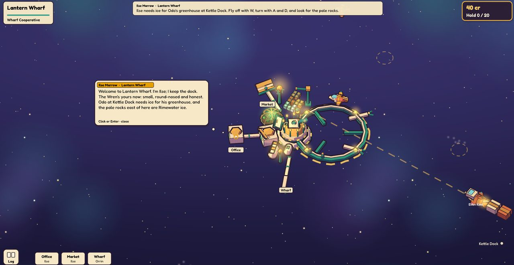
Newest build, docked at Lantern Wharf at the start of a game. The station is small and the dock's parts sit at four different screen edges.
What good looks like
Docking zooms in until the station fills most of the view. The station itself is the menu.
Each module carries its sign. The station key along the bottom gives the same rooms as icons, with New/Changed/Closed ribbons when something happened there.
A room opens beside its module (at most about 45% of the screen) and the station stays visible.
The station shows quiet life up close, such as lights, cranes and small craft.
The whole dock reads as one place you have arrived at, not as boxes around the screen edges.
Being docked is unmistakable, and nothing looks like a health bar unless it is one ▲ High
Where and how
The same start screen as above: docked at Lantern Wharf at the start of a new game.
What the player sees now
The station plate at the top left shows the station name, a teal horizontal bar under it, then the faction name. The station drawing is small, so nothing else in the view says "you are docked".
Andreas said
Not entirely sure what the to left bar is supposed to be. Is it a health bar for the station im closet to since Im not docked anywhere
He only realised a moment later that he was docked.
What good looks like
The docked state is obvious from the view itself: the zoomed-in station fills the screen, and the controls change to station controls.
The station's name and faction are shown in a way that cannot be mistaken for a meter.
Bars are used only for real quantities, and they carry a label.
Station modules look clickable and react cleanly ▲ High
Where and how
Docked at any station (for example Lantern Wharf), move the mouse over the station drawing.
Hover the Market module, then click it.
What the player sees now
Before hovering, nothing tells you the modules can be clicked. They are small buildings with small text labels.
Hovering the Market module draws an orange ring around it and shows a tooltip: Market · Ilse Marrow / Ice and ore bought, plate sold.
At the same time, a second pill at the bottom of the screen says the same thing (Market · Ice and ore bought, plate sold), and the Market tab lights up.
The hover area does not match the building, so the highlight seems to come and go.
Andreas said
The way you interact with these is super yanky. Its zero obvious that these even are interactive
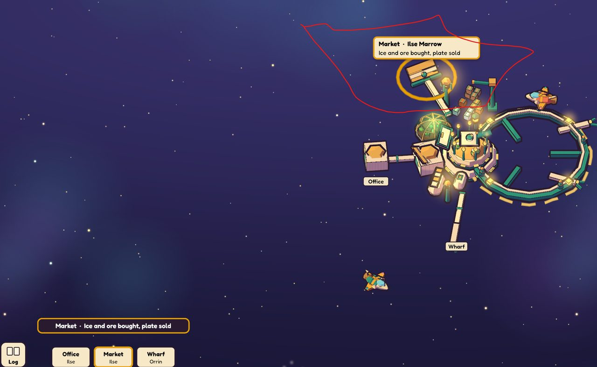
Newest build, hovering the Market module. The red marks are Andreas's. The same text appears twice, in the tooltip and in a pill at the bottom.
What good looks like
Modules look like things you can press even before you hover them. They are big enough, with a clear sign on each.
On hover, the module lifts slightly, gets an outline and shows its sign once (the keeper plus one line), and the pointer changes.
The hover area is generous and matches the building, so it doesn't flicker on and off.
A click glides smoothly to the room. A second click during the glide lands immediately.
Right-click or Esc goes back.
One name per thing: the fitting room is not also called "Wharf" ■ Medium
Where and how
Docked at Lantern Wharf, click the Wharf · Orrin tab or the Wharf module.
What the player sees now
The fitting room's panel is titled Wharf, Kept by Orrin Vale, Orrin fits parts in the cradle.
The station is also called "Lantern Wharf", and its plate stays on screen at the same time. Other places add to the mix: the "Wharf Cooperative" faction, and characters saying "east of the Wharf".
"Wharf" therefore means both the whole station and one room inside it.
Andreas said
the confusingly named wharf that is not the same thing as the station also named wharf
What good looks like
No word names both a station and a room inside it. For example, name the room after what it is or who keeps it (a fitting cradle, or the hullwright's). The station keeps its name. The agent picks the exact words.
A part ordered from a friend gets a proper arrival moment ● Low
Where and how
With at least 900 credits, open the fitting room at Lantern Wharf, then the Friends tab.
Order the seam lamp from Hesper Lune. It costs 900 cr and is sent to Glass Drift Observatory.
Fly to Glass Drift Observatory and dock.
What the player sees now
The only record is a line in the ship log: Hesper sent the seam lamp; it's in the Wren's locker.
At the dock, Hesper's bubble says a generic line that has nothing to do with the delivery: The lane lamps know your hull now. They brighten a little when you pass.
No card or receipt appears. To actually fit the lamp, the player has to fly back to Lantern Wharf.
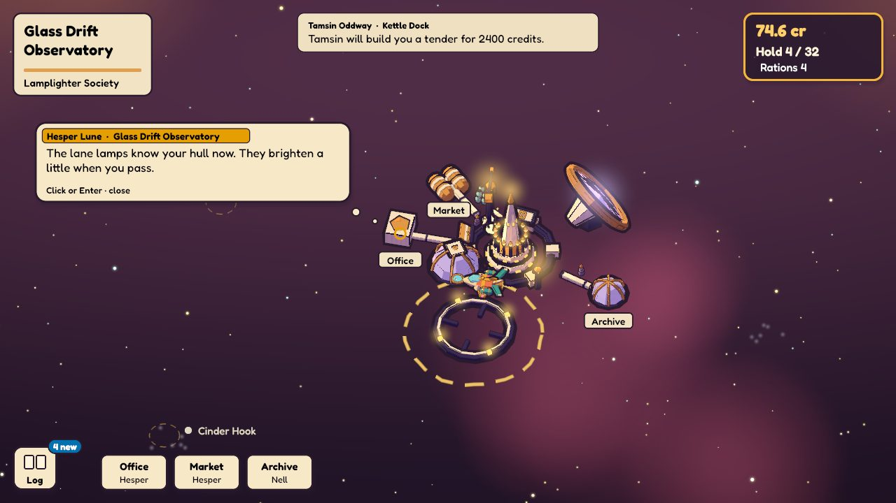
Newest build, arriving at the Observatory where the ordered seam lamp is delivered. Hesper's line is generic, there is no arrival card, and the news sits unseen in "Log 4 new". The goal banner at the top names a person at a different station (see "The goal banner doesn't compete with the conversation").
What good looks like
At the receiving dock, the keeper mentions the delivery in their bubble ("Your seam lamp came in").
A clear receipt shows what arrived and where it now is (the Wren's locker).
The player is told where it can be fitted.
HUD and screen hierarchy
Different kinds of information look different: no wall of identical beige boxes ▲ High
Where and how
Start a new game. The first screen, docked at Lantern Wharf, shows the problem best. It holds throughout the game, docked and in flight.
What the player sees now
At least seven things, each with a different job, share one look: a cream/beige box with a dark outline and dark text.
The station plate (top left)
The goal banner (top centre): Ilse Marrow · Lantern Wharf / Ilse needs ice for Odo's greenhouse at Kettle Dock. Fly off with W, turn with A and D, and look for the pale rocks.
Ilse's dialogue box (left)
The module labels Office, Market and Wharf on the station
The three room tabs (bottom)
The Log button (bottom left)
In flight: the control hint pill (Hold Space · mine ice) and the radio panel
Only the credits/hold box (40 cr / Hold 0 / 20) is dark. The player can't tell which boxes are talk, which are goals, which are status and which are buttons.
Andreas said
There is way too many identical styled beige boxes on screen at once that do different things. They all blend together
This was the main theme of his latest playtest. He repeated it inside the fitting room (see the next item).
Newest build, start of a game. Count the beige boxes: plate, goal banner, dialogue, three module labels, three room tabs, Log.
What good looks like
Each kind of thing has its own clearly different look, and the eye knows where to go first:
speech: a bubble over the speaker
the current goal
status (credits, hold)
buttons you can press
station signs
the radio
Fewer things are on screen at once. Anything not needed right now is hidden.
A focused screen shows only what that screen is for ▲ High
Where and how
Start a new game, mine ice until the hold is full (20/20), and fly back to Lantern Wharf.
Open the fitting room: the Wharf module or the Wharf · Orrin tab.
What the player sees now
The fitting panel is on the right:
POWER 0 of 4, MASS 0 of 3 free
tabs Ready 0 / Make 0 / Friends 0
THE WREN'S LOCKER
The ship's sockets are on the left.
Everything else also stays on screen:
the station plate Lantern Wharf
the goal banner Ilse asks you to take the ice to Odo at Kettle Dock. Dock in its ring and pick Deliver.
the credits/hold box 40 cr · Hold 20/20 · Ice 20
the hint W or S · fly off and undock
the Log button with 2 new
all three room tabs
Andreas said
More of the "all the beige boxes" that have different meaning. Do we really need the top quest, the lantern wharf banner, the hold, the undock and the log when inside the confusingly named wharf that is not the same thing as the station also named wharf
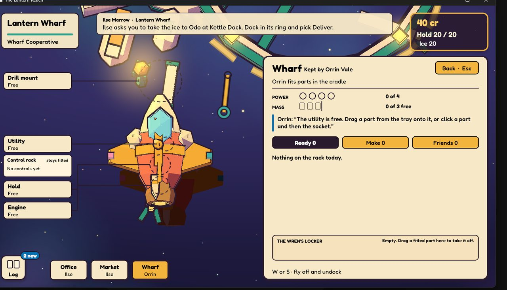
Newest build, the fitting room on a new game. The goal banner, station plate, hold box, undock hint, Log and tabs all stay around the fitting panel.
What good looks like
Inside a room, only what that room needs is shown. In the fitting room, for example, show the ship, sockets, parts, budgets and credits.
Goal, station plate, undock hint and log step out of the way, and come back when you return to the station view or fly off.
The goal banner doesn't compete with the conversation that gives the goal, and names the right person ■ Medium
Where and how
Case 1: start a new game. Ilse's welcome is open on the left.
Case 2: later in the game, after Tamsin at Kettle Dock offers to build a tender, dock at Lantern Wharf, Brassmouth Exchange or Glass Drift Observatory.
What the player sees now
Case 1: the goal banner at the top already reads Ilse Marrow · Lantern Wharf: Ilse needs ice for Odo's greenhouse at Kettle Dock…, while Ilse's bubble on the left is still saying the same thing in her own words. The player reads it twice, in two boxes that look alike.
Case 2: the banner reads Tamsin Oddway · Kettle Dock / Tamsin will build you a tender for 2400 credits. while you are docked somewhere else entirely. At the Observatory it sits right above Hesper's bubble, so it looks as if Tamsin is talking there.
Andreas said
The top bar and the Popup for the wharf compete. Why is the top bar "current goal" there when the conversation that actually gives me that goal is ongoing
From an earlier build, about a goal banner that popped up mid-flight: this feels a bit random. this "quest" itself is a good idea but the way we present them needs work.
Newest build, case 1: the goal banner (top) and Ilse's welcome (left) say the same thing at the same time. For case 2, see the Observatory screenshot under "A part ordered from a friend gets a proper arrival moment".
What good looks like
A goal appears only once the conversation that gives it has finished, as a quiet confirmation that it was added.
While docked, the goal shown is either relevant to this station or clearly marked with where it belongs (for example "at Kettle Dock").
A goal never looks like the current station's keeper is speaking.
All active goals can be reviewed, each showing who gave it.
The Log button can't be mistaken for pause ■ Medium
Where and how
Look at the bottom left of the screen, docked or in flight.
What the player sees now
The Log button's icon is two upright rectangles side by side above the word Log, which is the standard pause symbol. A badge such as 2 new sits on it. The game also has a real pause (P or Esc).
Andreas said
The "log" looks exactly like a pause button and we also have pause
Newest build. See the bottom-left corner: the Log icon is two vertical bars.
What good looks like
The log's icon looks like a log or a book of messages. Only the pause control looks like pause.
Labels and prices don't look like buttons, and buttons do ● Low
Where and how
Dock at Kettle Dock and open the Market.
Also: open the fitting room at Lantern Wharf after buying any part.
What the player sees now
In the Kettle Dock market, each price (pays 13.7 cr, pays 49.4 cr) is drawn as a filled yellow rounded pill, just like the real Sell 1 / Sell all buttons beside it.
In the fitting room, the status chips Fitted and In the locker are outlined like buttons, while the actual action, Drag to fit, is plain text.
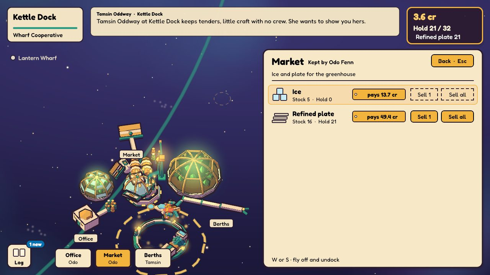
Newest build, Kettle Dock market. The price pills look like buttons. (The teal line through the station is a separate item, "The lane line doesn't cross the station you are docked at".)
What good looks like
Only things you can press look pressable. Prices and status read as plain labels, and the real verbs look like buttons.
NPC ship name labels stay readable and never cover stations or the HUD ● Low
Where and how
Start a new game and look near Lantern Wharf, where NPC ships come and go. Also look near Cinder Hook.
Open the fitting room and look at the top right.
What the player sees now
A ship's name is drawn in small white text under the ship. When the ship is over a station, the name sits on the station art and can't be read. Little Mercy was illegible over Lantern Wharf and Cinder Hook.
Near the screen edge the name is cut off, for example Little M….
In the newest build, the name Little Mercy is drawn on top of the HUD, just under the credits/hold box.
On a new game, two ship names near the Wharf briefly overlap each other.
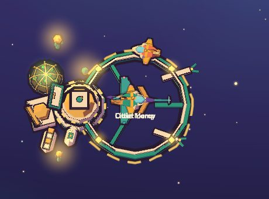
Earlier build: the label "Little Mercy" drawn over the station art can't be read.
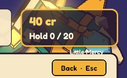
Newest build: "Little Mercy" drawn over the HUD under the credits box.
What good looks like
Labels stay readable and fully on screen. They never sit on top of stations, the HUD or each other. They step aside, fade or hide when crowded, and show again on hover.
Dialogue and NPCs
Dialogue comes one short line at a time, with speaker and place styled differently ▲ High
Where and how
Start a new game. Ilse's welcome opens at once.
What the player sees now
One box with a single orange pill on top, Ilse Marrow · Lantern Wharf. The speaker's name and the station name share the same style in the same pill.
Then one block of five sentences: Welcome to Lantern Wharf. I'm Ilse; I keep the dock. The Wren's yours now: small, round-nosed and honest. Odo at Kettle Dock needs ice for his greenhouse, and the pale rocks east of here are Rimewater ice.
Under it, in large text: Click or Enter · close.
In an earlier build, the same intro also stayed on screen after flying away from the station, which made it hard to connect to where it came from.
Andreas said
This is what 5 sentences but they are all just smashed into one wall of text and the speakers name and the location are styled the exact same + we have this massive click or enter - close competing for attention
From the earlier build: a bit wall of texty and it sticks beyond the stations so its a bit hard to relate after flying away … maybe more like a chat so I can scroll back
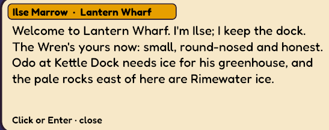
Newest build, Ilse's welcome on a new game.
What good looks like
A short bubble over the speaker with one sentence or beat at a time. A click advances, and a small marker shows there is more.
The speaker's name stands out on its own. The place is shown separately and more quietly, or left out when it's obvious.
The continue/close hint is small and quiet.
Past lines can be read again in the ship log.
Talk never stays on screen after you fly away.
Trust the player: no hint text for things that are already obvious ■ Medium
Where and how
Start a new game, mine 20 ice, fly to Kettle Dock and dock. Odo asks about the ice.
What the player sees now
Odo's box: Odo Fenn · Kettle Dock / Is that ice for my greenhouse? I still need 20. It's yours to deliver, sell or keep.
Three numbered answer buttons: 1 Deliver 20 ice to Odo, 2 Sell it at the market, 3 Keep it.
Under the buttons: Pick an answer: click it or press its number.
Andreas said
we dont need this super handholdy "the player has no brain" type of texts
From an earlier build, about a big "Your hold is full" pill and a mining-speed readout always shown while mining: This one is a bit to hand holdy. Like while mining it will show the mining speed. We need to teach the controls but not constantly
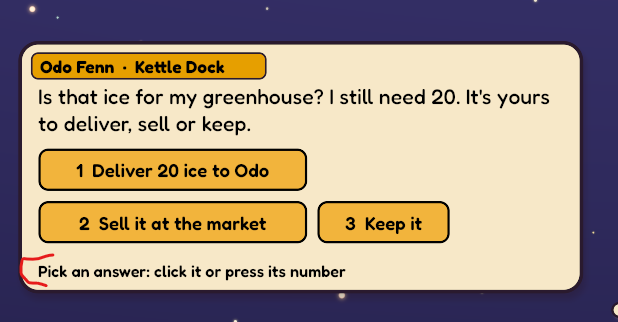
Newest build. Andreas circled the hint under the answers.
What good looks like
No text explains UI that explains itself. Numbered buttons are enough.
Things that do need teaching, like the first flight keys or how to mine, are shown early, then fade out once the player has used them a few times.
Readouts like mining speed show only when they matter.
The Deliver / Sell / Keep choice itself is good and stays.
NPCs don't repeat themselves, and an offer can be declined ● Low
Where and how
Mid-game, dock several times at the same station:
Glass Drift Observatory (Hesper)
Brassmouth Exchange (Pip)
Cinder Hook (Rook), after the dispute about Ilse's plate has started
What the player sees now
Hesper says The lane lamps know your hull now. They brighten a little when you pass. on every visit (seen 4+ times).
Pip says You're through that lane more often… on every visit (seen 5 times).
Rook offers money on every docking at Cinder Hook: they left 300 credits with me for you (seen 6 times). The only answer is Take, and it doesn't pay twice, so the offer is empty after the first time.
Each repeat is stored again, so the ship log and the world's memory fill with duplicates. In one run, the 8 most common entries were all repeats.
What good looks like
A line is said once. After that the character varies it, says something new, or just greets briefly.
An offer can be declined ("Not now" or "No"). Once taken or declined, it doesn't come back.
The log keeps one entry for one event.
News and world-change entries name the right source, in plain words and a clear order ● LowPossibly still open
Where and how
In an earlier build, messages and "Chronicle" entries (world changes) stacked in one box at the bottom left.
Deliver ice to Odo at Kettle Dock until a greenhouse ring lights up.
Buy the mining lens at Lantern Wharf.
Visit Cinder Hook for the first time and ask the dockmaster what changed.
What the player saw
Three entries were stacked with no order cue (no time, no newest/oldest marker), mixing speech and world news:
Odo Fenn · Kettle Dock: 20 ice. The beans will hear about this.
Odo about Orrin's mining lens
Chronicle · Ilse Marrow · Kettle Dock: At Kettle Dock, a greenhouse ring lit up. Ilse remembers.
That last entry is tagged with Ilse at Kettle Dock, but Ilse lives at Lantern Wharf.
At Cinder Hook, on a first visit, "Ask what changed" returned the Kettle Dock greenhouse news instead of anything about Cinder Hook.
"A greenhouse ring lit up" was used for what Odo himself calls the first pane.
Buying the lens produced the cryptic The pilot's welcome changed.
The word "Chronicle" was never explained.
Andreas said
You cant tell which order these are supposed to be read in.
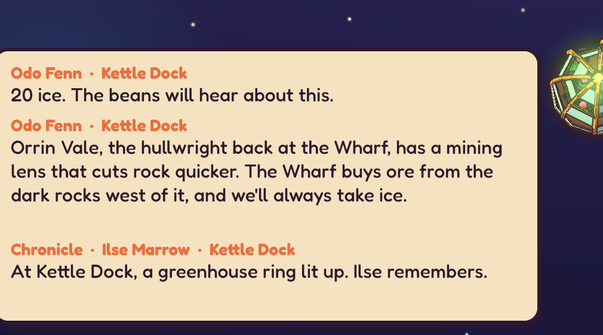
Earlier build. Talk and world news are mixed with no order, and the news is credited to Ilse at a station she isn't at.
What good looks like
World news looks different from speech. In the agreed design it surfaces as a ribbon on the station key with a one-line headline.
Every entry names the right source and place, and is about the station you are asking at.
The wording is plain ("Odo's greenhouse at Kettle Dock grew its first pane").
The log reads in an obvious order, newest clearly marked.
Control hints say exactly what the key or click does ● LowPossibly still open
Where and how
Two hints in earlier builds, both shown in the top banner while flying:
The pause hint early in a game.
The prompt after the nav chip became available.
What the player saw
Press P or Esc whenever you like. The whole galaxy waits for you. The poetic second sentence made it sound like the key opens a galaxy map, not pause.
Orrin has a nav chip: click where you want the Wren to go. This read as an instruction to click-to-move, but clicking did nothing, because the nav chip had to be bought first. It also named Orrin and the Wren before either had been introduced (see the next item).
Andreas said
super wierd way to sell the pause function. the text sounds like it would open a map or someting
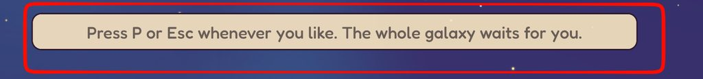
Earlier build, the pause hint.
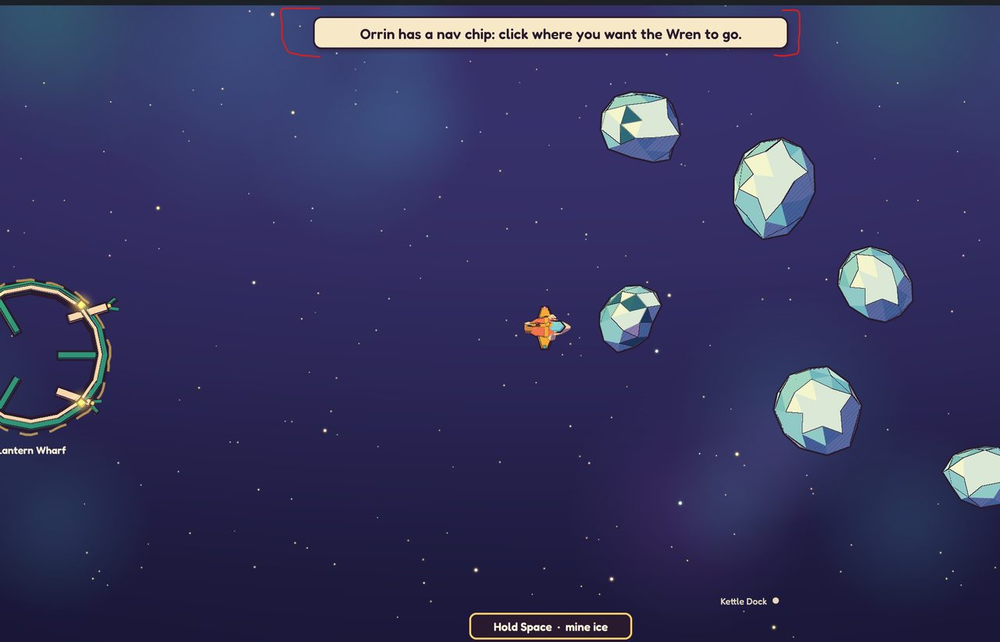
Earlier build, the nav chip prompt that read as an instruction to click-to-move.
What good looks like
A control hint states the key and its effect literally: "P or Esc · pause".
Something that isn't usable yet is described as an offer ("Orrin can fit a nav chip that lets you click to fly"), not as an instruction.
Flavour belongs in dialogue, not in control hints.
Names and terms are introduced before they are used ● LowPossibly still open
Where and how
Earliest builds, in the first minutes of play and on the first sale at Kettle Dock.
What the player saw
The banner Orrin has a nav chip: click where you want the Wren to go. came before the game had said who Orrin or the Wren were. Andreas couldn't tell whether he was the Wren and Orrin was his ship, or whether Orrin was someone still to meet. He worked it out only by finding "HULLWRIGHT · Orrin Vale" on a station screen.
After selling a full hold at Kettle Dock, Tamsin said You emptied a whole hold into Kettle Dock. A tender would've waited., but "tender" and "Kettle Dock" had not been explained.
"Chronicle" appeared as a label with no explanation.
The newest build already improves on this: Ilse's welcome says The Wren's yours now, and Tamsin's goal reads Tamsin Oddway at Kettle Dock keeps tenders, little craft with no crew.
Andreas said
never told the player what "wren" or "orrin" is
Discovering/figuring out in game systems is part of the fun but the game has to provide enough clues at a reasonable pace
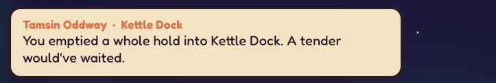
Earlier build: "tender" used before the game explains it.
What good looks like
Every proper noun has a path to being learned: you meet the person, see the thing, or someone explains it in a few words when it first comes up.
This is not a big arrow to the next objective. Clues can stay vague (see "Keep" at the bottom), but they must not depend on words the player has never seen.
Flight, collision and world
Things are solid: ships, rocks and stations bump and push, with no damage ▲ High
Where and how
Start a new game, undock from Lantern Wharf and fly east into the Rimewater ice field.
Fly straight at a rock, at an NPC ship and at a station.
Watch NPC ships moving through the field.
What the player sees now
The Wren flies straight through rocks, NPC ships and stations. It is drawn on top of or under them.
NPC ships also pass through rocks. In the screenshot, an NPC ship overlaps an ice rock near the ship Little Mercy.
When the player orders the ship to mine a rock, it parks a small gap away from the rock's drawn edge. In an earlier build, the ship also stopped clearly short of the rock, with a visible gap, and nudged sideways each time mining started.
Andreas said
I can fly through things. We dont need collision damage but we do need proper physics for bot objects like these, stations, other ships and so on
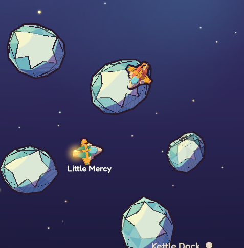
Newest build, Andreas's screenshot: an NPC ship overlapping an ice rock.
What good looks like
Every solid object (rocks, the player's ship, NPC ships, stations) has a body.
Touching gives a soft bump and push that the player can see and feel.
No collision damage, ever, and no punishment.
Warning from the previous attempt: solid rocks were tried once and pulled back. In the ice fields, rocks sit only a few ship-lengths apart, and solid rocks walled off mining spots and left NPC pilots stuck. Collision must keep every mining spot reachable and must not trap NPC pilots.
When mining, the ship sits right at the rock's drawn surface, with no visible gap and no sideways nudge.
Flight feels good: free movement, slight inertia, 180° per second turns, and fly straight off the dock ▲ High
Where and how
Any time in flight, starting with the first undock from Lantern Wharf.
What the player saw in earlier builds
Leaving the dock needed a separate key (Space), because W and S were used to choose rows in the station's trade list. The game felt frozen until you found it.
The starting speed felt too slow.
The ship had no inertia, and you couldn't fly in a straight line in any direction you liked.
Andreas repeated "flight controls still need fixing" in his second session.
The previous build's last version used:
W/S to thrust, A/D to turn, hold Space to brake and Shift to boost
slight inertia, so the ship coasts briefly to a stop
W flies straight off the dock
Andreas hasn't commented on that version, except for fixing the turn rate.
Andreas said
you cant just "fly" you have to hit space which makes the game feel frozen
On speed: maybe 20% faster than the first build. On feel: a tiny bit of intertia, and it was annoying not being able to fly in a straight line in any directions.
What good looks like
The ship turns at 180 degrees per second (decided).
A little inertia: not arcade-stiff, not heavy simulation. Letting go of thrust coasts gently to a stop.
You can hold a straight line in any direction you point.
Cruising speed feels brisk from the start, about 20% quicker than the original slow build.
Pressing a movement key while docked simply flies the ship off. There is no separate undock step.
The world feels alive out in space, not only at the dock ■ MediumPossibly still open
Where and how
Flying anywhere in the Lantern Reach, in an earlier build.
What the player saw
Apart from the player's ship and the NPC ships, everything (stations, rocks, the space around them) sat completely still. The previous build added life to the docked view: cranes, lights, small craft, and a quieter mode on Q. Open space was not rechecked.
Andreas said
the stations and the asterorids and like everything except me and npc ships are a bit to static
What good looks like
Gentle ambient motion in flight, for example:
rocks drifting and turning slowly
station rings turning and lights blinking
docking traffic
a little depth in the starfield
It stays calm and lower in contrast than anything you can interact with.
The lane line doesn't cross the station you are docked at ● Low
Where and how
Dock at Kettle Dock and look at the docked view.
What the player sees now
The teal line of a nearby lane is drawn in a long arc straight across the station art, between Odo's dialogue box and the Market module.
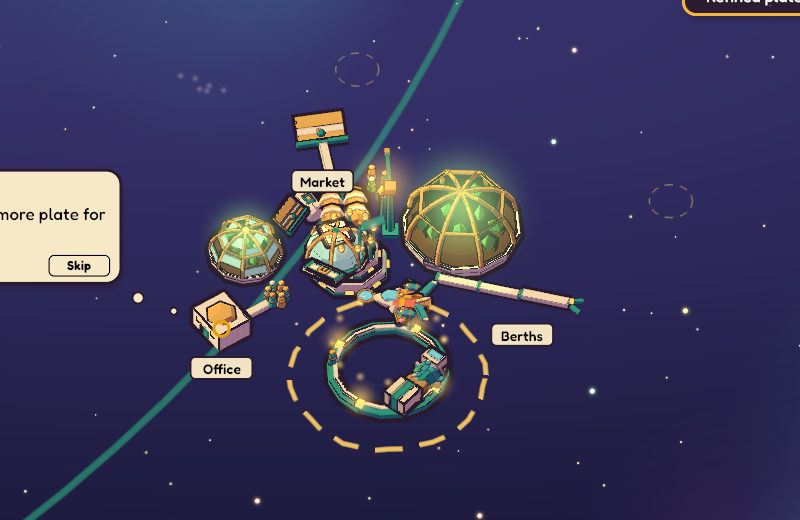
Newest build, docked at Kettle Dock: the teal lane line cuts through the station.
What good looks like
Route and lane lines never draw over the station you are docked at. They pass behind it, fade out near it, or hide while you are docked.
Flying is as smooth as being docked ● Low
Where and how
Compare how smooth the game runs in flight with how it runs docked, on the same computer.
What the player sees now
In the newest build, the measured frame rate was 26 frames per second in flight against 34 docked. The build before it reached about 46. There is no screenshot of the effect.
What good looks like
Flight is at least as smooth as the docked view and never feels heavy. This is a calm game with no reason to stutter.
Fitting room and controls
The fitting room is Orrin's cradle at Lantern Wharf. The Wren is drawn on the left with five sockets: drill mount, utility, control rack, hold and engine. The right panel shows the power and mass budgets, the Ready / Make / Friends tabs, the parts tray and the Wren's locker. To fit a part, drag it from the tray or locker onto a socket. While dragging, valid sockets get a sky-blue dashed ring, and a preview shows how the ship's stats change. To remove a part, drag it from its socket to the locker.
Basic controls are never taken away ▲ High
What this is
A locked decision from Andreas, not a complaint. The control modules (nav chip = click where to fly, rock cradle = click a rock to mine, lane chart = click the map to travel, order slate = line up orders, loop log = repeat a route, docking clamp) go in the control rack. In the newest build the rack is labelled Control rack · stays fitted and No controls yet.
What good looks like
Once a control is unlocked, the player has it forever.
It costs no power or mass, can't be dragged off, and survives refits, hull changes and any later reset or prestige system.
New controls are offered with a short note on what they do. They are never fitted silently.
Upgrades say what they do, and the difference can be felt ● LowPossibly still open
Where and how
In the first build, Andreas bought the mining lens at Lantern Wharf (600 cr), fitted it and went mining.
What the player saw
Nothing said what the lens did, and mining felt the same afterwards.
A later build added the text You mine half again as fast.
The newest build shows a stat preview while dragging, for example Top speed 173 → 159 ▼14.
Whether the effect is now felt in play was not rechecked.
Andreas said
never told me what it does and I cant tell any difference
On the fitting room in general: There is a whole ship fitting and upgrade system potentially hiding here with graphics, animations, a ship wharf, an upgrade tree
What good looks like
Every part states its effect in plain words and numbers before you buy or fit it.
After fitting, the change is perceptible: it looks, sounds or reads differently. For example, a faster mining beam, a fuller-looking hold, or a visible speed change.
A short crane or fitting animation (which a click skips) makes the moment feel real.
The fitting room isn't empty on a new game ● Low
Where and how
Start a new game and open the fitting room at Lantern Wharf straight away.
What the player sees now
Ready 0 / Make 0 / Friends 0 and Nothing on the rack today.
An empty locker, and the sockets showing nothing fitted.
The first visit to the most exciting room shows nothing to want.
Newest build, the fitting room on a new game: nothing on the rack.
What good looks like
The first visit already shows something to look at and aim for, such as a part or two on the rack, even if the player can't afford them yet, with prices and effects. The player leaves with a goal.
Dragging shows a refusal before you let go, the same way for every rule ● Low
Where and how
Fit hold pods. Your hold becomes 32.
Load more than 22 units: for example, take on Ilse's 20 plate and buy a few more, giving Hold 25/32 · Refined plate 25.
In the fitting room, drag the hold pods from the Hold socket to the locker.
What the player sees now
During the drag, everything says yes:
the locker shows Let go here to take it off
the preview IF YOU TAKE OFF THE HOLD PODS lists Top speed 159 → 173 ▲14, Turn 174 → 198 ▲24, Hold 32 → 22 ▼10
there is no warning
Only after you let go: × Orrin: "Your hold would take 22, and you carry 25. Sell or deliver some first."
By contrast, dragging a part that needs too much power warns during the drag (next item). The two rules behave differently.
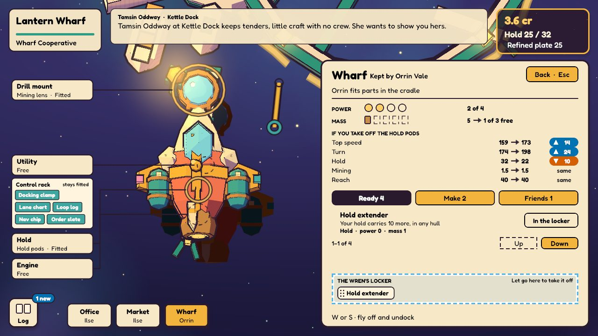
Newest build, during the drag: no sign that this will be refused.
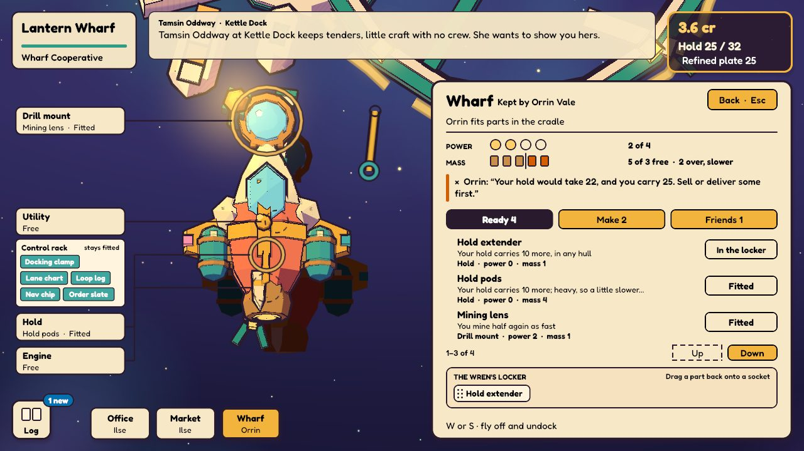
Newest build, after letting go: the refusal appears only now.
What good looks like
While dragging, a target that will refuse the drop looks refused at once: a different outline plus a cross or word, never colour alone. It shows the short reason ("You carry 25; the hold would take 22").
Every rule (power, mass, cargo) warns the same way and at the same moment.
A refused socket names the real reason, in full ● Low
Where and how
With parts already using 3 of the Wren's 4 power, drag the seam lamp (which needs 2 power) from the locker towards the Utility socket.
What the player sees now
The Utility socket shows × Can't go on here…, cut off. It reads as "wrong socket" even though the socket is the right one.
The real reason appears only in the tooltip by the pointer: × That would draw 5 power, and the Wren only has 4. Take something off first. Power +2.
The budget row shows × Over power: 5 of 4.
Several part labels in the sockets are also cut off.
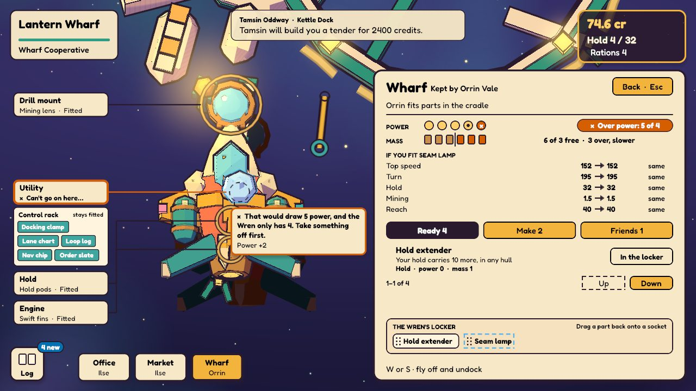
Newest build: the socket's message is vague and cut off. The real reason is in the tooltip.
What good looks like
The socket itself says the real reason in full, readable words, for example "Not enough power: needs 2, 1 free". No label is cut off at the design resolution.
The mass budget reads in plain terms ● Low
Where and how
Fit hold pods (heavy) and another part so the Wren carries more mass than its free allowance of 3, then look at the MASS row in the fitting room.
What the player sees now
The row reads MASS ▢▢▢▢▢▢ 6 of 3 free · 3 over, slower, with a mix of solid and dashed squares.
"6 of 3 free" makes no sense as written. It means 6 mass used against 3 carried freely.
The squares don't explain which are free and which are over.
Earlier in the same session it read 5 of 3 free · 2 over, slower.
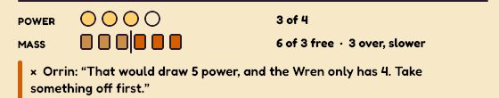
Newest build, the power and mass rows.
What good looks like
A plain statement of mass used against what the hull carries freely, and what the excess costs, for example "Mass 6 · hull carries 3 freely · 3 over: slower, wider turns". The squares, if kept, clearly mark free versus over.
The parts tray keeps its size while you drag ● Low
Where and how
At 1280×720, open the fitting room with a few parts in the tray or locker and start dragging one.
What the player sees now
While a part is being dragged, the tray collapses to a single row with the pager 1–1 of 4, so the other three parts disappear.
The preview box (Let go to fit hold pods, Mass +3, top speed 173 → 159 ▼14, turn 198 → 174 ▼24) takes its space.
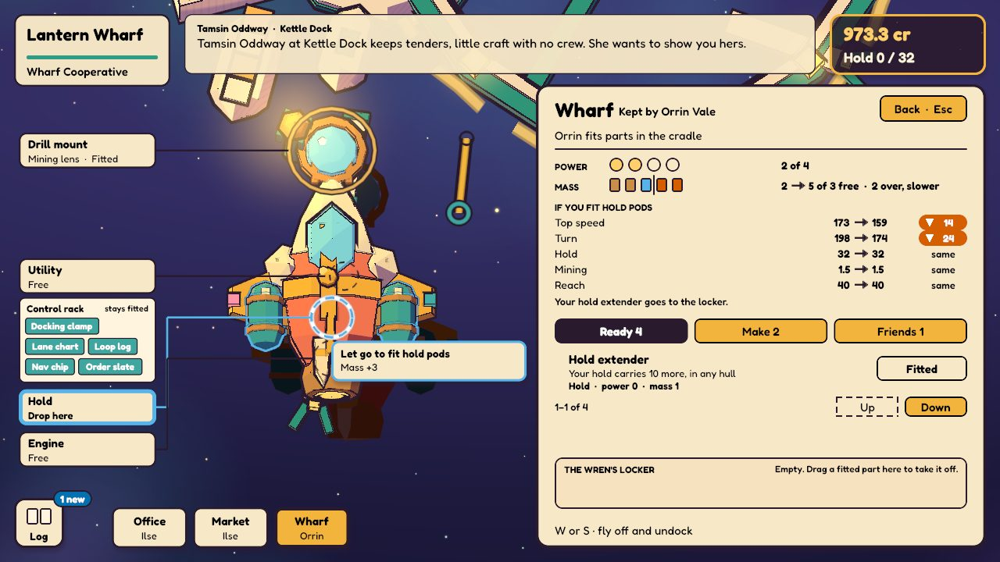
Newest build, mid-drag: the tray shrinks to one row ("1–1 of 4").
What good looks like
The tray stays at full size during a drag at 1280×720, and the preview finds room without pushing it away.
The keeper's bubble doesn't cover the work, and doesn't repeat the receipt ● Low
Where and how
In the fitting room, buy and drop hold pods onto the Hold socket.
What the player sees now
Orrin's bubble appears on the left, over the cradle: There: I've fitted your hold pods. Your hold carries 10 more; heavy, so a little slower, with wider turns. It covers the ship and the Drill mount label.
A confirmation card says the same: Confirmed · Lantern Wharf: Fitted hold pods · −450 cr; your hold extender went to the Wren's locker.
The Hold socket says Fitting… underneath.
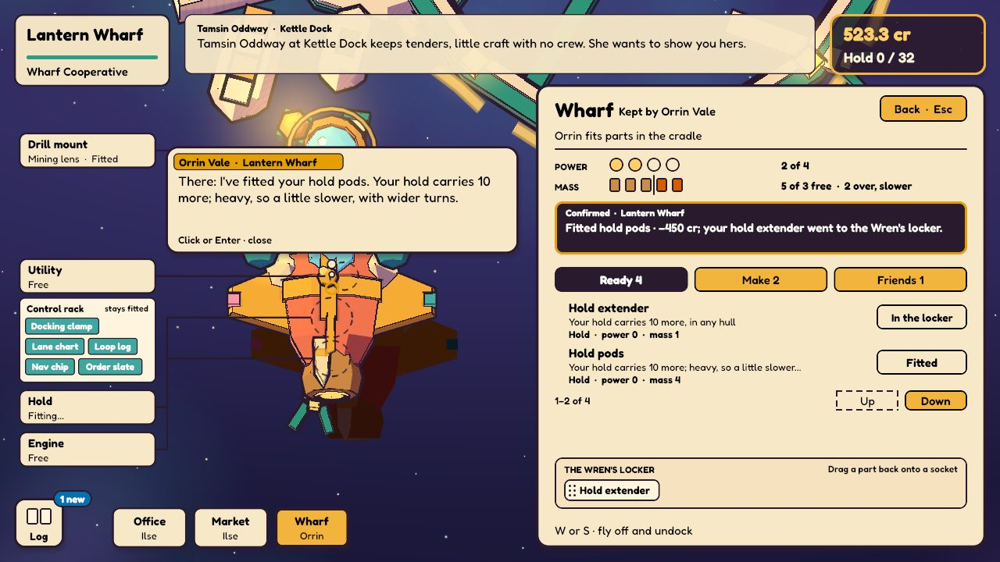
Newest build, just after a fit: the bubble covers the cradle and repeats the receipt.
What good looks like
Bubbles never cover the thing you are working on.
One clear receipt for the transaction.
If the keeper speaks, it adds flavour ("Heavier now, mind the turns") rather than repeating the receipt.
Cargo, trade and progression
Helping a station grow feels worth it ■ Medium
Where and how
Deliver or sell ice and refined plate to Odo at Kettle Dock over several trips. His greenhouse grows in stages ("rings").
For example, he asks: My greenhouse needs 24 more ice and 2 more plate for its next ring.
Keep going until he offers the first harvest.
What the player sees
In an earlier build, the domes glowed green and Odo said Second ring's lit. Mostly your ice. And your plate, mostly. That was it.
The newest build adds a "lamp night" at the station and a harvest offer with Accept / Not now.
After 24 more ice and 2 plate, the harvest gift is Confirmed · Kettle Dock: Odo gave you 4 rations from the first harvest · a gift, worth about 60 credits. That is small next to what the deliveries cost in time and cargo.
Andreas said
something turned green ... ok why is this exciting, mysterious, rewarding
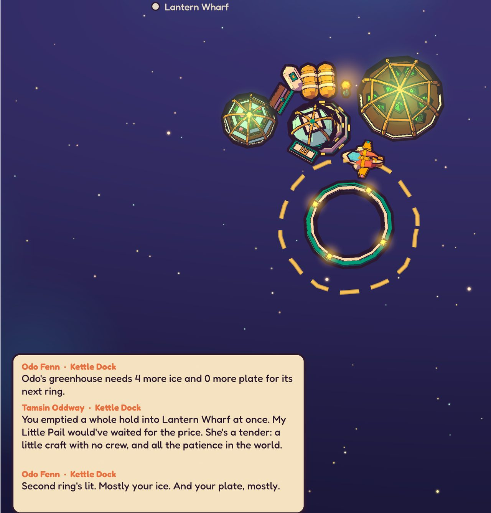
Earlier build: the ring lights up, and nothing says why it matters.
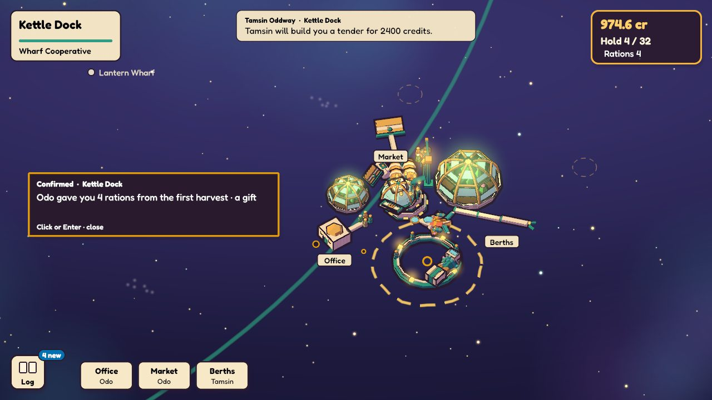
Newest build: the first-harvest reward is 4 rations.
What good looks like
Each milestone feels exciting, mysterious or rewarding. The player knows beforehand that something will happen, and afterwards sees a real change. For example:
a new person or room at the station
a story hook
new goods
a visible change to the station
a reason to come back
The exact size of rewards belongs to the balance pass (see the note below).
Buy buttons rest while the hold is full ● Low
Where and how
Take on Ilse's 20 refined plate for Rook (Hold 20/20 · Refined plate 20 · Ilse's), then open the Market at Lantern Wharf.
What the player sees now
Rations (asks 15.9 cr) and Refined plate (asks 32.9 cr) still show solid, normal-looking Buy 1 / Buy max buttons, although nothing can be bought.
The sell side correctly shows You have no glassite to sell.
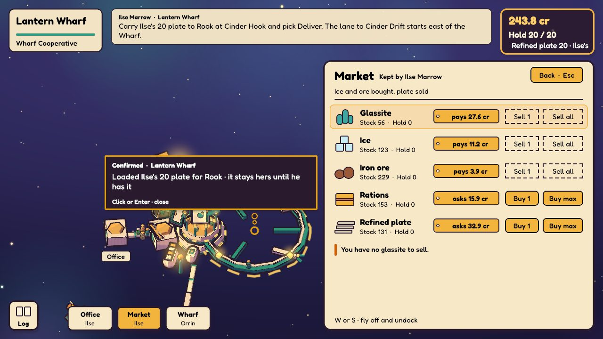
Newest build: the hold is full, but the buy buttons look ready.
What good looks like
With a full hold, the buy buttons are drawn as resting (for example dashed, never greyed text), with one short reason.
The agreed station mock-up words it as Hold full: buy buttons rest until you sell.
Note: balance and market tuning are deferred to a separate pass. They are not changes for the rebuild. These numbers from the previous build are recorded for that pass:
Trade loops pay well in both directions, so mining stops mattering early:
Glassite costs 21.3 cr at Cinder Hook and sells for 50.4 at Brassmouth.
Refined plate costs 30.1 at Brassmouth and sells for 59–62 at Cinder Hook.
One run turned 3.5 cr into 497.3 cr with 12 glassite.
Selling a full hold crashes the price, even for goods a station says it always takes:
Kettle Dock plate fell from 45.9 to 14.1 and ice to 5.8, though Odo says we'll always take ice.
In the newest build, 21 plate posted at 49.4 averaged 34 each, and 30 ice posted at 13.7 averaged 8.58.
The first delivery quest pays 120 cr for 20 ice (6 per unit), while Kettle Dock's market pays about 14 per unit. Doing what you are asked earns about half.
The first-harvest gift (4 rations, about 60 cr) feels small for 24 ice and 2 plate.
Music and radio
The radio doesn't flicker between stations ▲ High
Where and how
Start a new game, undock from Lantern Wharf and fly east into the Rimewater ice field, the first place you mine.
Fly around or mine there for half a minute and watch the radio panel at the bottom right.
Rimewater sits right on the edge of both Lantern Wharf's and Kettle Dock's radio ranges, so this happens in the first minutes of every game.
What the player sees now
Within about two seconds, four things flip back and forth:
the channel name (Lantern Wharf radio ↔ Kettle Dock radio)
the ticker text (Lantern Wharf here. We keep the lamps lit along the pier all shift. ↔ Kettle Dock calling. Our greenhouse wants ice, as much as you can carry.)
the signal bars and word (Strong → Fair → Faint)
the style of the Prev / Next buttons, which switch between filled and outlined
In small gaps between ranges, and on every lane trip, the panel flashes No signal.
The ticker also cuts hard to the next line every few seconds.
The panel only exists in flight.
This is not a deliberate effect: the strongest channel simply wins each moment.
Andreas said
Something is really messed up with this. They keep blinking randomly as I fly around. Could be that its just a badly made attempt to simulate signal faintness
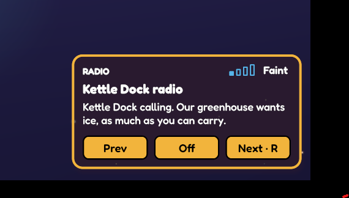
Newest build, Andreas's screenshot of the radio panel.
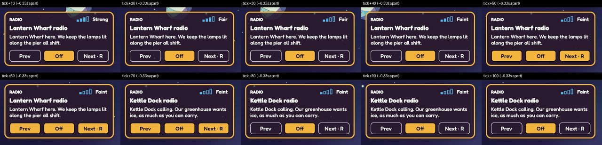
Newest build: ten frames about a third of a second apart while flying in Rimewater. The channel, bars and button styles keep changing.
What good looks like
Once tuned, the radio stays on a channel until you are clearly out of its range or another channel is clearly and steadily stronger.
Changes are gradual: the music and ticker fade, and the station name changes once.
Weak signal is shown calmly, for example a little static or a lower volume, never as flicker.
Brief gaps and lane trips don't flash "No signal".
Button styles never change on their own.
The ticker moves to its next line gently.
Music belongs to the player, not to a save ▲ High
What the player experiences now
Radio music is generated by an online music service and kept beside each save.
The spending cap is also per save: 0.40 dollars per save and at most 2 new tracks per launch.
The Reach has 7 channels (5 stations and 2 lane beacons). Two tracks each at 4 cents is 0.56 dollars, more than the cap, so in any one save four of the slots never fill and stay on quiet placeholder loops.
Starting a new game, jumping to a saved point, copying a save or deleting the music folder each starts with no music and a fresh cap. There is no real ceiling on total spending.
Working offline falls back to the placeholder loops, which works.
Andreas said
Music isn't save state. A station's radio sounds the same whatever happened in your game, so per-save is the wrong scope
What good looks like
One music collection per player, shared by every save.
A track made for a channel and its mood is reused by every game that plays that channel.
The spending cap is per player and is a real overall ceiling.
Starting a new game never regenerates music the player already has.
Every radio channel has a real starter track from the first launch ▲ High
What the player experiences now
Without generated music, for example offline or before generation runs, every channel plays only a quiet placeholder loop. Because of the cap above, some channels stay on the placeholder for good in any save.
What good looks like
The core game, the part that always loads, ships one finished starter track per radio channel. That is 7 tracks for the Lantern Reach.
Every channel has real music from the first launch, even offline. Generation only adds variety on top.
Before shipping generated tracks, check the music service's usage terms for them, and the added download size. One 30-second clip is about 0.75 MB, so 7 is about 5 MB.
Signal bars match the signal word ● Low
Where and how
Fly close to Lantern Wharf with the radio on.
What the player sees now
The word Strong appears with only 3 of the 4 bars filled. Fair and Faint show fewer.
Newest build, the first frames: "Strong" with 3 of 4 bars.
What good looks like
The bars and the word always agree. Strongest means all bars.
A quiet engine hum and ambient sound ● LowPossibly still open
What the player experienced
The first build had no engine sound and no ambient sound, in stations or in space. Andreas noted it as missing. Real audio was not checked in the later test runs.
What good looks like
A quiet engine hum that follows thrust, and soft ambient sound beds out in space and at each station. These sit under the radio music without fighting it.
Exploits
Quick undock and redock taps never count as visits ■ Medium
Where and how
While docked at any station (for example Kettle Dock), tap W to undock and immediately dock again.
Repeat a few times.
What the player sees now
Earlier build: three quick taps at Cinder Hook counted as three dockings. That opened the next story step at Cinder Hook before the current one was finished, and the map's "seen 1 docking ago" note jumped to 5. Unlocks such as the nav chip also counted dockings.
Newest build: the story and unlocks no longer count taps (fixed). But each station's count of how often you have scouted it still goes up with every tap. At Kettle Dock it went from 3 to 7 after 4 taps. Nothing reads that count yet, but future content could.
What good looks like
Anything that counts dockings or visits ignores quick in-and-out taps. A visit only counts after the ship has really left: flown a real distance away, or gone somewhere else.
Progress can never be farmed by tapping at a dock.
Keep: already right in the previous build (don't regress)
Deliveries are a choice. On docking with goods someone wants, the player picks Deliver, Sell or Keep and gets a receipt. Cargo never appears or disappears silently. Earlier, cargo was handed in automatically on docking, and Andreas said: I think i just handed in my 20 mined ore but not sure… This needs to be way more in the players control. Plate also appeared in the hold unexplained: I have no idea why I have 20 plates instead of ore…
Carried cargo shows whose it is. Cargo carried for someone else is marked as theirs (Refined plate 20 · Ilse's) and can't be sold. Loading it gives a receipt: Loaded Ilse's 20 plate for Rook · it stays hers until he has it.
Controls and gifts are offered. New controls and gifts are offered with what they do, never fitted silently.
NPCs speak in the first person. Not "Odo's greenhouse needs…" from Odo himself.
Directions are vague but correct. Ilse's The lantern current east of the Wharf carries you there is the reference clue level. Andreas: The "lantern" and the slightly vague message about where it is is good. make the player work for it. Directions must match the map (an earlier build said "west" for a field that is south).
The world has an edge. Flying past a region's edge, a gentle current carries you back.
Layout is clean. Nothing overlaps at 1280×720. Credits use one format everywhere. All active goals are listed with who gave them. The map screen's title is never covered. The window opens at the design size.
Talk and hints don't linger. Talk doesn't stay on screen after undocking, and control hints retire after a few uses.
Mining looks clean. Rock shading changes smoothly while mined, with no blocky jumps, and the mining beam ends cleanly on the rock's surface.
Happenings work. A lamp night at Kettle Dock lasts three dockings. The harvest offer has Accept / Not now, and "Not now" is offered again later.
The Reach has an overview. A map screen exists without locking in a minimap design.